很多app, 例如Apple Music, Castro, 和Evernote(仅国际账户, 都可以在app drawer中找到, 分享其中的内容体验十分顺滑.
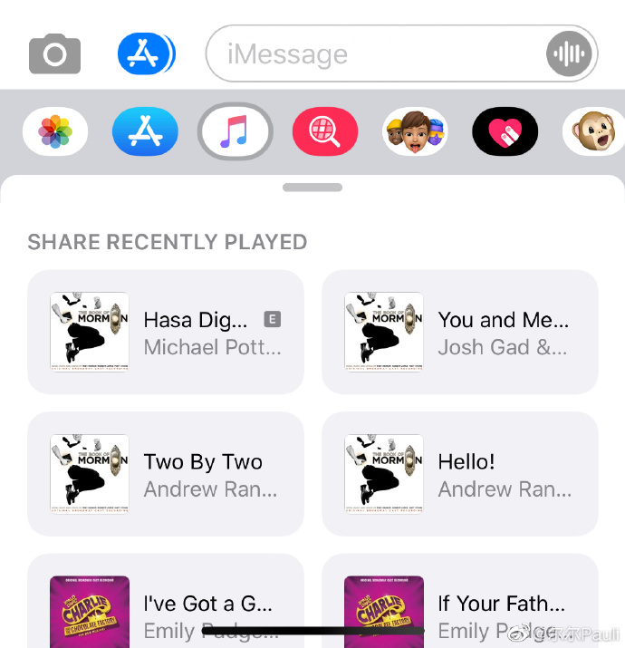
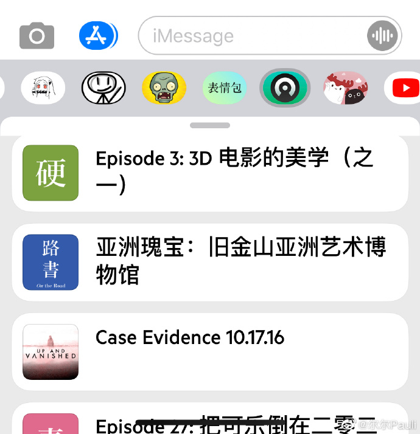让我玩耍了两天无法停下现在依然上头的表情LOL:
1) 可以在find images中通过关键字检索GIF表情;
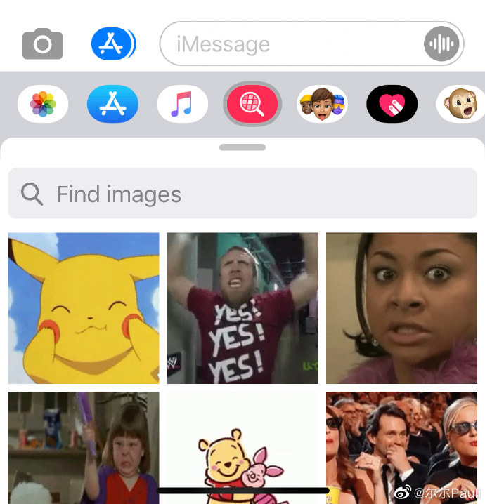
2) 可以捏脸并录制表情/视频, 不想捏脸也有巨型emoji表情可以选择LOL;
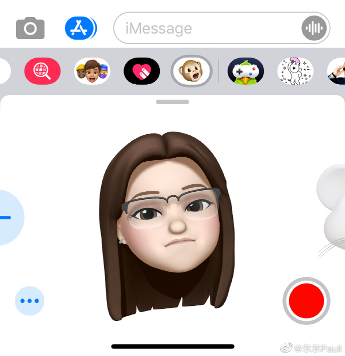
3) 让人无法自拔的sticker. 除去iMessage自带的sticker, 也可以去app store搜索表情包下载(有些需要付费), 同时一些app也自带相关的表情包(譬如纪念碑谷和delta). 长按 sticker 可以将其自由的拖动, 贴在对话框上或者对方发送的表情/图片上. 完全是表情使用上的跃级式的进步, 打破秩序, 创造出了无穷多的使用场景.
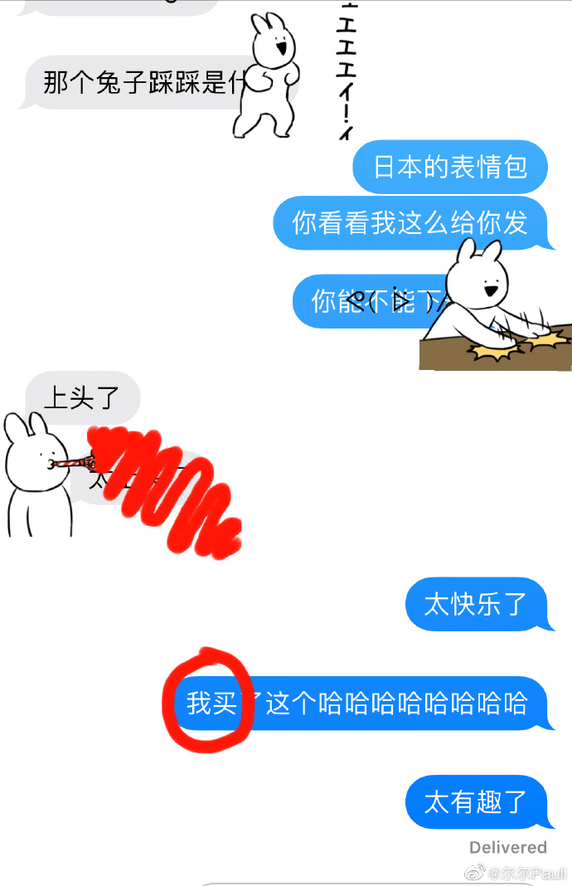
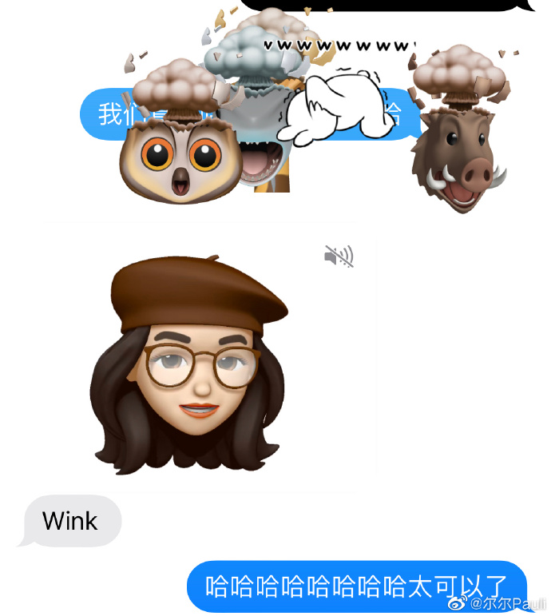digital touch: 写字/画画/点击生成简单的几种动画.
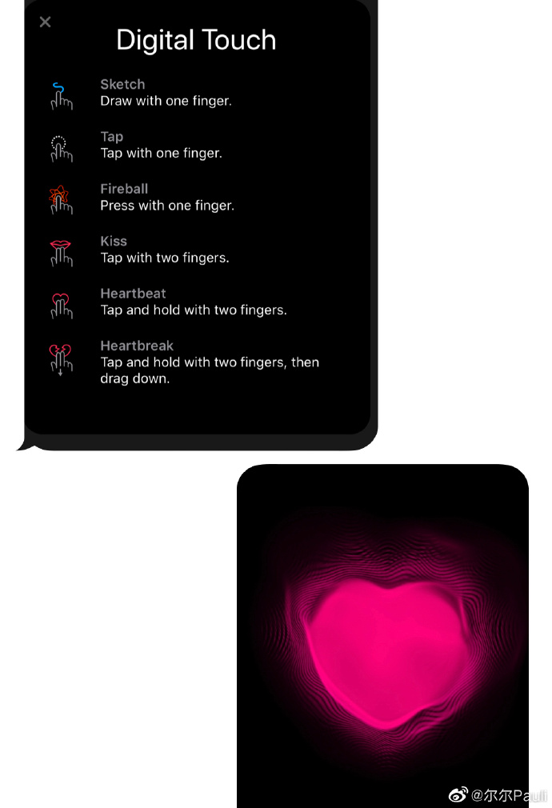特效: 输入完要发送的文字/表情后, 长按发送键, 可以选择给消息加特效. 其中screen类型的特性可以通过左右滑动切换特效类型.
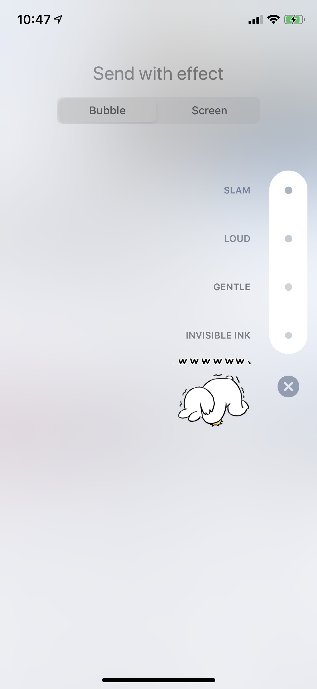
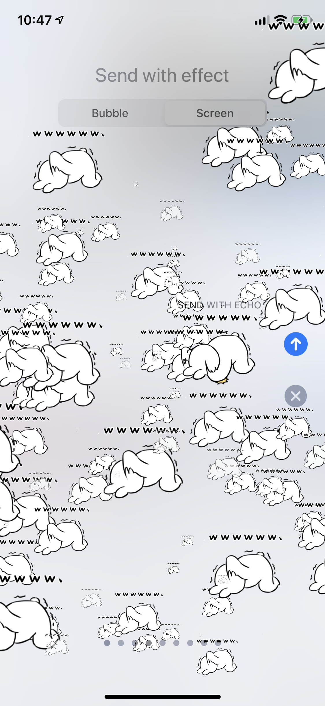GamePigeon: 一个简单又很有趣的可以和朋友一起玩的游戏集合.
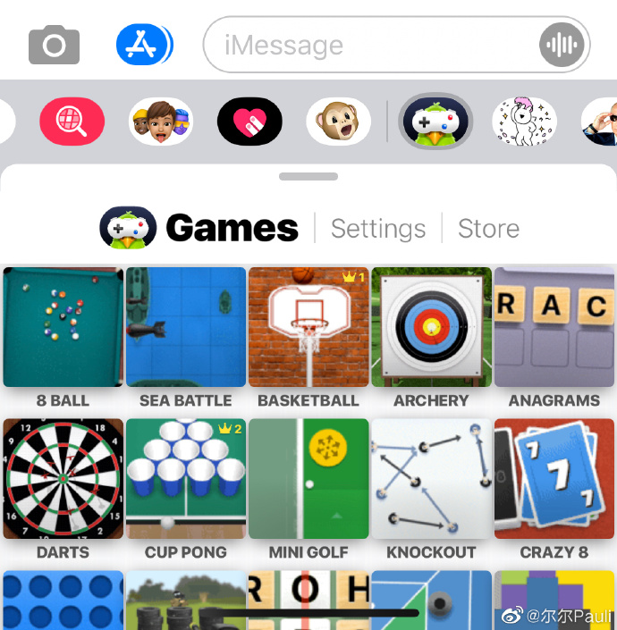场景解释: 我渐渐习惯并热爱通过平台区分我的交际圈与使用场景, 在我的使用场景中, iMessage是私人且即时的对话. 工作上的往来official的内容与讨论会通过邮件进行, 即时消息/语音及视频通话会使用公司的message平台, 个人时间我完全拥有不查看这些平台的权利; 紧急联络可以通过拨打电话; 友人之间有文档之类的文件需要传输, 可以选择发私人邮件. 我渐渐很少使用微信.
唯一的遗憾: 现在还没有quote功能.
一个提醒: 如果发的截图很模糊, 需要双方在messages的setting中检查一下都有没有关闭low quality image mode, 关闭后即可正常发送“清晰的”截图.
一点屁话: 认为工具完全是被自己操控, 自己可以不受工具的影响, 是一种非常古老的错觉. 事实就是, 即使是可以抵抗, 工具也一样会不断对使用者的从生活到思想的方方面面产生影响. 而如果觉得一样工具不好用/对自己产生了坏的影响, 即使很麻烦, 也要努力寻找替代工具. “效率”, “方便”, “减少麻烦”真的是需要警惕一万分的词语. 如果真心实意的想向人推荐一样工具/一部作品/一种文化/无论什么, 是需要首先充分理解对方的q需求, f然后不厌其烦的非常耐心的解释每一个细节, 每一项优点与缺点, 提供足够多的信息, 还要死皮赖脸. 如果”怕麻烦”, 就只能不断自我封闭/自我阉割.
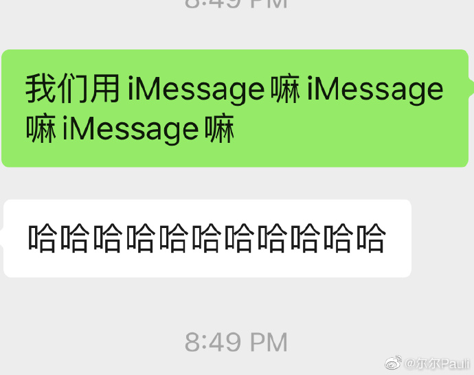可能的问题: iMessage传图片和视频会有些慢, 但我可以接受慢, 可以等待.
iOS端转发多条消息时, 会直接将消息合并成一条并允许你再编辑, 体验上就是一个会促使你在需要调出一段对话时, 将其转化为完整的段落的机制.
PC端可以直接选中消息, “右键”调出选项选择services, 将消息Add to Evernote.
半吊子果粉 - all about iMessage 1.0
Welcome to my other publishing channels